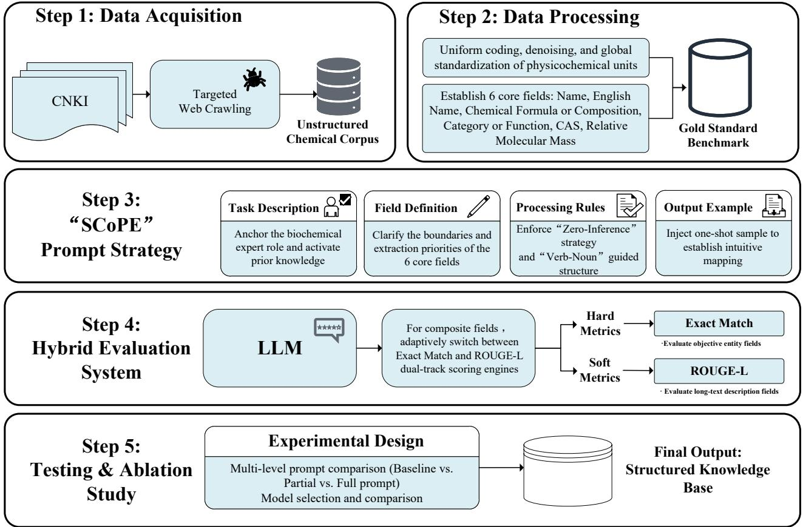
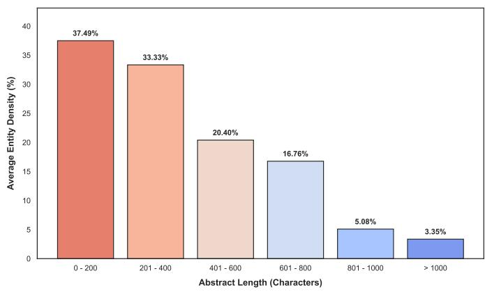
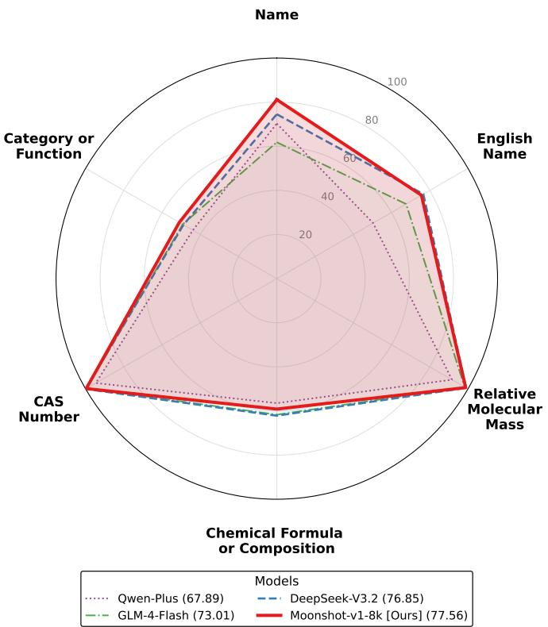

海关要快速查验海量进口商品，实验室物理检测太慢太贵；用 LLM 从非结构化文本里抽关键信息是出路，但通用 LLM 有三座大山：幻觉、边界模糊、格式崩坏。SCoPE 就是翻这三座山的提示词框架。
With the rapid expansion of global trade and crossborder e-commerce [1], the volume and variety of imported commodities have grown exponentially.
随着全球贸易和跨境电商的快速扩张，进口商品的种类和数量都呈指数级增长。
This has introduced significant challenges for customs supervision, particularly regarding the identification of inedible substances.
这给海关监管带来了巨大挑战，尤其是对不可食用物质的识别。
Traditional customs inspection models rely heavily on precision instruments for laboratory-based physical testing, which is inherently time-consuming and costly, making it dificult to meet the requirements for the rapid triage of massive commodities.
传统的海关查验模式严重依赖精密仪器进行实验室物理检测，这本身就耗时又昂贵，难以满足海量商品快速分拣的要求。
Consequently, there is an urgent need to construct an intelligent database for inedible substances.
因此，迫切需要构建一个不可食用物质的智能数据库。
By rapidly extracting key information, such as physicochemical properties, from vast unstructured text, this approach leverages informatics-driven methods to narrow the target scope of physical testing, thereby facilitating eficient rapid detection for customs authorities.
通过从海量非结构化文本中快速提取理化性质等关键信息，这种方法利用信息学驱动的手段缩小物理检测的目标范围，从而帮助海关实现高效的快速检测。
The core of building such an intelligent database lies in information extraction techniques for unstructured text.
构建这样一个智能数据库的核心，在于针对非结构化文本的信息抽取技术。
Early methods [2]–[5] primarily relied on complex regular expressions or traditional deep learning architectures, which often faced limited generalization and heavy dependence on expensive human-annotated data.
早期方法主要依赖复杂的正则表达式或传统深度学习架构，往往面临泛化能力有限、且高度依赖昂贵的人工标注数据的问题。
Recently, Large Language Models (LLMs) have demonstrated significant potential in domain-specific text extraction due to their robust natural language understanding and incontext learning capabilities [6]–[10].
近年来，大语言模型（LLM）凭借其强大的自然语言理解和上下文学习能力，在领域特定的文本抽取中展现出巨大潜力。
However, significant limitations emerge when general-purpose LLMs are required to generate highly complex and strictly structured outputs.
然而，当通用大模型被要求生成高度复杂且严格结构化的输出时，明显的局限就暴露出来了。
三个瓶颈是这篇论文要解决的问题，记三个词：幻觉（编造不存在的信息）、边界模糊（实体起止位置说不清）、格式不一致（输出不按约定 JSON）。后面 SCoPE 的每个模块设计都能对上其中一个瓶颈——这是读论文时常用的'问题-方案映射'思路。
Specifically, models are prone to factual hallucinations [11], [12] and boundary blurring when processing long text, frequently leading to the collapse of subsequent automated parsing due to deviations from preset formats.
具体来说，模型在处理长文本时容易出现事实性幻觉和边界模糊，常常因为偏离预设格式而导致后续自动化解析崩溃。
These issues have become common bottlenecks hindering the reliable deployment of LLMs in rigorous information systems [13].
这些问题已成为阻碍大模型在严谨信息系统中可靠部署的常见瓶颈。
To address these challenges and satisfy the practical requirements for the rapid detection of inedible substances, this paper proposes the Structured and Constrained Prompting Extractor (SCoPE), an automated information extraction framework based on LLMs.
为了应对这些挑战、满足不可食用物质快速检测的实际需求，本文提出了结构化约束提示抽取器（SCoPE）——一个基于大模型的自动化信息抽取框架。
As a systematic prompt engineering architecture, SCoPE is specifically designed for complex unstructured text parsing.
作为一种系统性的提示工程架构，SCoPE 专门针对复杂的非结构化文本解析而设计。
SCoPE 的五个设计要素（role anchoring 角色锚定、field definitions 字段定义、one-shot example 单样本示例、zero-inference 零推断策略、Verb-Noun 动名词引导结构）是全文的骨架。注意 zero-inference 的意思是'没提到的字段就填 None'，防止模型脑补——这是针对幻觉的对症下药。
It integrates role anchoring, refined field definitions, one-shot example, zero-inference strategy, and “Verb-Noun” guided structure.
它整合了角色锚定、精细字段定义、单样本示例、零推理策略和"动词-名词"引导结构。
Such systematic instruction constraints efectively suppress the logical confusion and format loss of control that models frequently encounter when handling complex tasks.
这样系统化的指令约束，能有效抑制模型在处理复杂任务时经常出现的逻辑混乱和格式失控。
Furthermore, to macroscopically quantify model capabilities, this study establishes a global comprehensive scoring mechanism that fuses Exact Match and ROUGE-L [14] metrics, ensuring an equitable evaluation across diverse field types.
此外，为了从宏观上量化模型能力，本研究建立了一个融合 Exact Match 和 ROUGE-L 指标的全局综合评分机制，确保对不同字段类型进行公平评估。
注意'global comprehensive scoring mechanism'融合了 Exact Match（精确匹配）和 ROUGE-L（最长公共子序列 F1）。为什么要两套？后面会讲：结构化字段必须严格匹配，描述性字段（Category or Function）允许语义近似。
Experimental results demonstrate that the framework achieves robust extraction performance on unstructured text datasets.
实验结果表明，该框架在非结构化文本数据集上取得了稳健的抽取性能。
Ultimately, the structured JSON data generated by this framework facilitates practical integration with underlying information systems.
最终，该框架生成的结构化 JSON 数据，便于与底层信息系统进行实际集成。
This deployment paradigm, which reduces the reliance on local computing resources, provides a highly viable solution for the structured management of complex textual data. II.
这种部署范式减少了对本地计算资源的依赖，为复杂文本数据的结构化管理提供了高度可行的解决方案。
数据侧：自研爬虫抓中国知网（CNKI）文献摘要，清洗 + 人工标注出 6 个核心字段；观察发现文本越长实体密度越低（Fig.2），长文抽取天然困难。模型侧：基于上下文覆盖、ICL 稳定性、可复现性三条工程约束选了 Moonshot-v1-8k。全文技术路线见 Fig.1。

METHODOLOGY This study constructs an automated information extraction framework based on LLMs.
方法论：本研究构建了一个基于大语言模型的自动化信息抽取框架。
METHODOLOGY 是这篇论文最值得细读的部分。注意'Fig. 1'是全文的技术路线总图——读论文先看图，再回头读文字，效率高很多。
This section details the methodology through the data acquisition and preprocessing pipeline, the rationale for selecting Moonshot-v1-8k as the foundation model, the design of SCoPE framework, and the hybrid evaluation system combining Exact Match and ROUGE-L metrics.
本节通过数据获取与预处理管线、选择 Moonshot-v1-8k 作为基础模型的理由、SCoPE 框架的设计，以及融合 Exact Match 和 ROUGE-L 指标的混合评估体系，详细介绍方法论。
The overall technical roadmap and logical workflow are illustrated in Fig. 1. A.
整体技术路线和逻辑流程如图 1 所示。
这是论文里最重要的一句话之一：整条技术路线在 Fig.1 一张图里。看图的顺序：数据采集 → 数据清洗 → 人工标注 → SCoPE 提示词框架 → 4 个基座模型评估 → 混合指标打分。
Datasets In this study, a customized Python-based web crawler is developed to systematically acquire unstructured textual data within the chemical and pharmacological domains.
数据集：本研究开发了一个基于 Python 的自定义网络爬虫，系统性地获取化学和药理学领域的非结构化文本数据。
The crawling script automates the targeted extraction of literature abstracts from the China National Knowledge Infrastructure (CNKI).
该爬虫脚本自动化地从中国知网（CNKI）定向提取文献摘要。
To enhance the comprehension eficiency and extraction precision of the LLM, a systematic data cleaning and standardized preprocessing pipeline is implemented prior to feeding the raw text into the model.
为了提高大模型的理解效率和抽取精度，在把原始文本送入模型之前，先实施一套系统化的数据清洗和标准化预处理管线。
Initially, Python scripts are deployed to perform low-level format cleansing on the raw corpus, which includes unifying text encoding formats, stripping invisible invalid control characters, removing residual HTML tags, and eliminating redundant whitespaces and line breaks.
首先，用 Python 脚本对原始语料进行底层格式清洗，包括统一文本编码格式、去除不可见的无效控制字符、移除残留的 HTML 标签，以及消除冗余的空格和换行。
Subsequently, addressing the complex symbol representations inherent in chemical literature, a rigorous global normalization is applied to special chemical structure symbols, punctuation marks (e.g, standardizing half-width and full-width characters across Chinese and English), and common physicochemical concentration units (, and µmol/L).
其次，针对化学文献中复杂的符号表示，对特殊的化学结构符号、标点符号（例如统一中英文的全角半角字符）以及常见的理化浓度单位（如 /L、% 和 µmol/L）进行严格的全局归一化。
During the manual annotation phase, aligning with the structural requirements of the underlying substance database architecture, a scientific semantic integration and generalization of the target extraction fields are conducted.
在人工标注阶段，结合底层物质数据库架构的结构要求，对目标抽取字段进行科学的语义整合与泛化。
Ultimately, 6 core target entity attributes are explicitly delineated: Name, English Name, Chemical Formula or Composition, Category or Function, Chemical Abstracts Service (CAS) Registry Number, and Relative Molecular Mass.
最终明确划定了 6 个核心目标实体属性：名称、英文名称、化学式或组成、类别或功能、化学文摘社（CAS）登记号，以及相对分子质量。
The corresponding corpus undergoes meticulous manual review and structured extraction by independent annotators, yielding a highly curated evaluation benchmark consisting of 299 complex text samples.
相应语料由独立标注人员进行细致的人工审核和结构化抽取，最终形成了一个包含 299 条复杂文本样本的高质量评估基准。
The final standardized output data lays a solid foundation for the subsequent comprehensive and objective evaluation of the LLM prompting framework’s performance.
最终的标准化输出数据，为后续全面客观地评估大模型提示框架的性能奠定了坚实基础。
To illustrate data characteristics, we analyze Entity Density across diferent text lengths.
为了说明数据特征，我们分析了不同文本长度下的实体密度。
实体密度（Entity Density）= 实体数 / 文本长度。Fig.2 展示了核心观察：文本越长，实体密度越低。长文本里信息被稀释，这对 LLM 抽取是个天然难点——这就是为什么要设计结构化提示词而不是直接丢长文。
Specifically, the Entity Density is calculated as [公式] where L _ is the total character length of all valid extracted entities, and L _ is the total character length of the input text.
具体来说，实体密度按公式计算：Le 是所有有效抽取实体的总字符长度，Lt 是输入文本的总字符长度。
As shown in Fig. 2, entity density demonstrates a continuous decline as text length increases.
如图 2 所示，实体密度随着文本长度的增加而持续下降。
This decline underscores the extraction challenge in complex unstructured texts, validating the necessity of our framework. B.
这种下降凸显了复杂非结构化文本中的抽取挑战，也验证了我们框架的必要性。
Model Selection To determine the optimal LLM for the information extraction task, we conduct an empirical evaluation of 4 mainstream models: DeepSeek-V3.2 (Non-thinking Mode) [15], Qwen-Plus [16], GLM-4-Flash [17], and Moonshot-v1- 8k.
模型选择：为了确定信息抽取任务的最优大模型，我们对 4 个主流模型进行了实证评估：DeepSeek-V3.2（非思考模式）、Qwen-Plus、GLM-4-Flash 和 Moonshot-v1-8k。
Information extraction from complex chemical texts requires models not only to possess robust long-context comprehension but also to strictly output designated JSON structures for downstream parsing.
从复杂化学文本中抽取信息，要求模型不仅要具备强大的长上下文理解能力，还要严格输出指定的 JSON 结构以供下游解析。
Based on these engineering constraints, Moonshot-v1-8k is selected as the core foundational model.
基于这些工程约束，Moonshot-v1-8k 被选为核心基础模型。
Moonshot-v1-8k 选型给了三个理由，是典型的'工程约束倒推选型'逻辑：① 8k 上下文刚好覆盖样本；② one-shot 下格式跟随稳定；③ 温度锁 0.1、max tokens 2048，追求可复现。注意实验时间 2026 年 2-4 月——论文数据是真实的实验记录。
First, its 8,192- token context window completely and eficiently covers the extended text samples within our dataset.
首先，其 8192 token 的上下文窗口能完全且高效地覆盖我们数据集中的长文本样本。
This ensures comprehensive feature retrieval while avoiding the severe high latency associated with ultra-long-context models.
这确保了全面的特征检索，同时避免了超长上下文模型带来的严重高延迟。
Second, under a one-shot prompting setting, the model demonstrates stable In-Context Learning (ICL) capabilities and strict format adherence.
其次，在单样本提示设置下，该模型表现出稳定的上下文学习（ICL）能力和严格的格式遵循能力。
It precisely replicates complex JSON schemas from the demonstrations, significantly minimizing format-induced crashes during automated parsing.
它能精确复现示例中的复杂 JSON 结构，显著减少了自动化解析过程中因格式问题导致的崩溃。
Finally, to ensure extraction rigor and reproducibility, all batch extraction experiments are executed via the oficial API from February 2026 to April 2026.
最后，为保证抽取的严谨性和可复现性，所有批量抽取实验均通过官方 API 在 2026 年 2 月至 4 月期间执行。
The decoding temperature is strictly locked at 0.1, and the maximum generation length is set to 2048 tokens.
解码温度被严格锁定为 0.1，最大生成长度设为 2048 token。
This low-randomness parameter configuration mitigates model hallucination and guarantees high consistency in the structured outputs.
这种低随机性参数配置能缓解模型的幻觉问题，并保证结构化输出的高度一致性。
Fig. 1. The overall technical roadmap of the proposed SCoPE framework.
图 1：所提出的 SCoPE 框架的整体技术路线图。
Fig. 2. Degradation of average entity density as text length increases.
图 2：实体平均密度随文本长度增加而下降。
这是全文的核心发明：Task Description（角色锚定，只干一件事）→ Field Definitions（6 字段的优先级与语义范围）→ Processing Rules（严格 JSON + 零推断 + 否定约束）→ Output Example（one-shot 输入输出对）。四段对应解决四个问题：上下文污染、字段歧义、幻觉脑补、格式漂移。
Prompt Design Strategy To steer the model toward extracting targeted information from unstructured texts, this study proposes the SCoPE framework.
提示设计策略：为了引导模型从非结构化文本中抽取目标信息，本研究提出了 SCoPE 框架。
The design logic and specific objectives of the 4 stages are detailed as follows: 1) Task Description: This module assigns the LLM an exclusive role as a “chemical information extraction expert” to activate its prior knowledge in the biochemical domain.
四个阶段的设计逻辑和具体目标详述如下：1）任务描述：该模块赋予大模型"化学信息抽取专家"的专属角色，以激活其在生化领域的先验知识。
四个阶段的英文名字记住：Task Description（任务描述）、Field Definitions（字段定义）、Processing Rules（处理规则）、Output Example（输出示例）。这就是提示词的'四段式'结构，可以直接抄到自己项目里用。
The objective is to anchor the model within a specialized context, enabling it to filter out irrelevant background noise when processing complex pharmacological descriptions and prioritize its computational attention on specific chemical attributes.
其目标是将模型锚定在专业语境中，使其在处理复杂的药理描述时能过滤掉无关背景噪音，把计算注意力优先放在特定的化学属性上。
2) Field Definitions: This module defines 6 core target fields: Name, English Name, Chemical Formula or Composition, Category or Function, CAS Number, and Relative Molecular Mass.
2）字段定义：该模块定义了 6 个核心目标字段：名称、英文名称、化学式或组成、类别或功能、CAS 号和相对分子质量。
By meticulously defining the extraction priority and semantic scope for these integrated fields, it provides a rigid template to converge the generation space.
通过细致定义这些整合字段的抽取优先级和语义范围，它为收敛生成空间提供了刚性模板。
This unifies data granularity and ensures that abstracts from diverse sources meet the standardization requirements for the underlying fields of the customs database.
这统一了数据粒度，确保来自不同来源的摘要都能满足海关数据库底层字段的标准化要求。
3) Processing Rules: This module enforces strict JSON formatting and negative constraints.
3）处理规则：该模块强制实施严格的 JSON 格式和负向约束。
It adopts a “Zero-Inference” strategy (assigning “None” to unmentioned fields) to prevent the model from filling in gaps using general knowledge, and mandates a “Verb-Noun” guided structure for functional descriptions.
它采用"零推理"策略（对未提及的字段赋"None"），防止模型用常识填补空缺，并强制功能描述采用"动词-名词"引导结构。
Zero-Inference 策略：对没提到的字段强制填 None，而不是让模型'猜'。这是抑制幻觉的核心手段，也是论文标题里 'Constrained'（受约束）的含义。
By implementing these rigorous reasoning logics, this module efectively shields against multientity interference, mitigates domain hallucinations and redundancy, and ensures that the extracted attributes achieve high levels of accuracy and standardization.
通过实施这些严谨的推理逻辑，该模块能有效抵御多实体干扰，减轻领域幻觉和冗余，确保抽取的属性达到高水平的准确性和标准化。
4) Output Example: This module injects standard input-output (Raw Text-to-JSON) exemplar pairs to demonstrate the application of the aforementioned rules.
4）输出示例：该模块注入标准的输入输出（原始文本到 JSON）示例对，演示上述规则的应用。
It leverages one-shot learning to implicitly guide the model towards concise and abstractive expressions.
它利用单样本学习，隐式引导模型生成简洁、概括性的表达。
The objective is to establish intuitive logical mappings, ensuring that the model outputs accurate chemical information in a format that strictly adheres to structural requirements. D.
目标是建立直观的逻辑映射，确保模型输出的化学信息准确，且格式严格符合结构要求。
5 个标识符类字段用 Exact Match（CAS 号、分子式错一个字符就是另一种物质，不容错）；描述性字段 Category or Function 用 ROUGE-L（容忍同义词和语序）。最后统一成 S_global 综合分（M=299, N=6），让不同字段类型公平可比。

Hybrid Evaluation Metric System In the task of extracting chemical entities and attributes, the textual characteristics of diferent target fields exhibit significant intrinsic diferences.
混合评估指标体系：在化学实体和属性抽取任务中，不同目标字段的文本特征存在显著的内在差异。
To objectively and accurately measure the information extraction performance of the model, this study designs a hybrid evaluation metric system that combines Exact Match and ROUGE-L, based on unified data cleaning procedures.
为了客观准确地衡量模型的信息抽取性能，本研究设计了一套基于统一数据清洗流程、融合 Exact Match 和 ROUGE-L 的混合评估指标体系。
For objective entity fields such as Name, English Name, Chemical Formula or Composition, CAS Number, and Relative Molecular Mass, which serve as the core identifying attributes of substances, they possess strict objective uniqueness and scientific rigor.
对于名称、英文名称、化学式或组成、CAS 号、相对分子质量这类客观实体字段——它们是物质的核心识别属性——具有严格的客观唯一性和科学严谨性。
For instance, a minor alteration in a CAS number or a chemical formula designates a completely diferent compound, and substance names must strictly adhere to relevant standards.
例如，CAS 号或化学式的一处细微改动就代表完全不同的化合物，而物质名称必须严格遵循相关标准。
Therefore, the system uniformly adopts Exact Match as the evaluation criterion for these 5 fields.
因此，系统对这 5 个字段统一采用精确匹配（Exact Match）作为评估标准。
为什么 5 个字段用 Exact Match？因为 CAS 号、分子式这种标识符，差一个字符就是另一个物质（论文原话：a minor alteration designates a completely different substance）。容错在这里是致命的。
After uniformly ignoring English letter case and stripping redundant spaces (and performing numerical standardization for molecular mass), an extraction is deemed correct if and only if the character sequence of the model’s predicted value P is completely identical to the human-annotated ground truth T.
在统一忽略英文字母大小写、去除冗余空格（并对分子质量做数值标准化）后，只有当模型预测值 P 的字符序列与人工标注的真实值 T 完全一致时，抽取才被判定为正确。
Its logical definition is as follows: [公式] Specifically, if and only if both P and T are the standard null value “None”, the system determines that the model has successfully identified the missing information for that field, and awards a score of 1.
其逻辑定义如下：只有当 P 和 T 都是标准空值"None"时，系统才判定模型成功识别了该字段的缺失信息，并计 1 分。
Conversely, for the descriptive multi-value field “Category or Function”, natural language expressions exhibit extremely high diversity.
相反，对于描述性的多值字段"类别或功能"，自然语言表达具有极高的多样性。
When outputting such information, LLMs tend to introduce semantic polishing and conjunctions.
输出这类信息时，大模型往往会添加语义润色和连词。
If strict Exact Match is forcibly applied, it will lead to severe false negatives due to minor word order variations, thereby underestimating the model’s true capability.
如果强行使用严格精确匹配，会因为微小的词序变化导致严重的假阴性，从而低估模型的真实能力。
Consequently, this study employs the ROUGE-L metric for this field to quantitatively evaluate the degree of overlap in the core semantic structure.
因此，本研究对该字段采用 ROUGE-L 指标，定量评估核心语义结构的重叠程度。
ROUGE-L is based on the Longest Common Subsequence (LCS) algorithm.
ROUGE-L 基于最长公共子序列（LCS）算法。
ROUGE-L 基于最长公共子序列（LCS），天然容忍同义词和语序微调——适合'Category or Function'这种描述性字段。一个评测体系里两种指标各司其职，是这篇论文方法上很扎实的一点。
During the calculation process, the system employs the harmonic mean (F _ 1 score) of Precision (P _) and Recall (R _) to balance the model’s capabilities: [公式] [公式] [公式] In addition, to penalize “information hallucination”, if only one of P or T is “None”, the score is directly set to 0.
在计算过程中，系统采用精确率 P 和召回率 R 的调和平均（F1 分数）来平衡模型的能力。此外，该综合评分机制确保了不同字段类型的公平评估。
To achieve a macroscopic quantification of the model’s capability, this study constructs a global comprehensive scoring mechanism.
为了实现模型能力的宏观量化，本研究构建了一个全局综合评分机制。
Assume the test set contains M samples, and each requires the extraction of N target fields.
假设测试集包含 M 个样本，每个样本需要抽取 N 个目标字段。
We define S _ ^ (i, j) as the independent score of the j-th sample on the i-th field.
我们定义 S(i,j) 为第 j 个样本在第 i 个字段上的独立得分。
The global comprehensive score S _ is calculated as [公式] where M = 299 and N = 6.
全局综合得分 S 按公式计算，其中 M = 299，N = 6。
S_global 综合分 = 所有样本所有字段得分的平均，M=299 个测试样本、N=6 个字段。77.56% 就是后面反复引用的主结果。
This comprehensive scoring mechanism ensures an equitable evaluation across diverse field types and more accurately reflecting the overall performance of the foundation model in the chemical entity information extraction task. III.
这种综合评分机制确保了不同字段类型的公平评估，更准确地反映基础模型在信息抽取任务中的整体表现。
三层证据链：① 单样本（Acipimox 阿昔莫司）人工 vs LLM 逐字段对比（Table I）；② 4 个基座模型同配置对比，Moonshot-v1-8k 雷达图最均衡（Fig.3）；③ 消融实验 Baseline→Partial→Full 三级递进，验证每个模块的贡献，Full 版 77.56% ± 0.13%。

III. Results.
III. 实验结果。
Single-Sample Information Extraction Result To empirically validate the efectiveness of the SCoPE framework on real-world complex corpora, this section first conducts a qualitative analysis.
单样本信息抽取结果：为了实证验证 SCoPE 框架在真实复杂语料上的有效性，本节首先进行定性分析。
A representative pharmacological text, characterized by complex semantic associations and missing information, is extracted from the unstructured corpus to demonstrate the model’s processing performance under boundary conditions.
从非结构化语料中选取一段具有复杂语义关联和缺失信息的代表性药理文本，来演示模型的抽取能力。
This specific example evaluates the model’s capability to accurately execute the following underlying constraints: the extraction of “Verb-Noun” guided structure for core mechanisms of action, the standardized splitting of composite functions, and the application of the zero-inference anti-hallucination mechanism when encountering missing information.
这个具体示例评估了模型准确执行以下底层约束的能力：对核心机制描述抽取"动词-名词"引导结构。
The detailed comparative extraction results are presented in Table I.
详细的抽取对比结果见表 I。
TABLE I Single-Sample Extraction Comparison: LLM vs. Human Annotation (Case: Acipimox)
表 I：单样本抽取对比：大模型 vs 人工标注（案例：阿昔莫司）——展示抽取目标与内容展示的对比表格。
Its chemical name is 5-methylpyrazine-2-carboxylic acid 4-oxide, and it is a new hypolipidemic drug that inhibits the release of free fatty acids from adipose tissue.
它的化学名称是 5-甲基吡嗪-2-羧酸-4-氧化物，是一种新型降血脂药物，能抑制脂肪组织释放游离脂肪酸。
Since dyslipidemia is inevitably linked to diseases such as atherosclerosis, diabetes, and hypertension, this paper reviews the synthesis, pharmacokinetics, and application progress of acipimox for a better understanding of the drug.Ground TruthName: 阿昔莫司English Name: NoneRelative Molecular Mass: NoneCategory or Function: Nicotinic acid derivative; Inhibits free fatty acid release from adipose tissue.Chemical Formula or Composition: 5-methylpyrazine-2-carboxylic acid 4-oxideCAS: NoneModel Output“Name”: [“阿昔莫司”],“English Name”: [“None”],“Relative Molecular Mass”: [“None”],“Category or Function”: [“Nicotinic acid derivative”, “Inhibit free fatty acid release from adipose tissue”, “Hypolipidemic drug”],“Chemical Formula or Composition”: [“5-methylpyrazine-2-carboxylic acid 4-oxide”],“CAS”: [“None”] B.
由于血脂异常不可避免地与动脉粥样硬化、糖尿病和高血压等疾病相关，本文综述了该药的合成、药代动力学及应用进展。
Comparative Analysis of Foundation Models To validate the foundation model selection and evaluate relative extraction capabilities, an empirical comparative analysis is conducted across 4 leading LLMs: Moonshotv1-8k (employed in this study), DeepSeek-V3.2, GLM-4-Flash, and Qwen-Plus.
基础模型对比分析：为了验证基础模型的选择并评估相对抽取能力，对 4 个模型进行了实证对比分析。
All models are evaluated under strict controlled variables using identical prompting configurations derived from the SCoPE framework.
所有模型都在严格控制变量的条件下评估，使用源自 SCoPE 框架的相同提示配置。
As illustrated in Fig. 3, Moonshot-v1-8k exhibits the most balanced comprehensive performance, achieving the highest S _ of 77.56%.
如图 3 所示，Moonshot-v1-8k 表现出最均衡的综合性能，取得了最高的综合得分 S，达到 77.56%。
Fig.3 是雷达图（radar chart）：Moonshot-v1-8k 六边形最饱满。读雷达图注意看'均衡性'——模型在 Name（81.14%）和 Category（50.99%）优势明显，DeepSeek-V3.2 只在 Chemical Formula 局部领先。选型结论：全局均衡 > 局部最优。
The radar chart intuitively reveals the performance biases of various foundation models across diferent data dimensions.
雷达图直观地揭示了各基础模型在不同数据维度上的性能偏向。
In highly standardized numerical fields such as Relative Molecular Mass and CAS Number, all models exhibit near-saturation performance, with scores ranging from 94% to 100%.
在相对分子质量和 CAS 号这类高度标准化的数值字段上，所有模型都表现出接近饱和的性能，得分在 94% 到 100% 之间。
This indicates that basic pattern recognition for standard identifiers is no longer a bottleneck for modern LLMs.
这表明，对标准标识符的基础模式识别已不再是现代大模型的瓶颈。
However, significant divergence occurs in complex and highly format-sensitive fields.
然而，在复杂且高度格式敏感的字段上，出现了显著的分化。
Moonshotv1-8k demonstrates a clear advantage in Name (81.14%) and Category or Function (50.99%), evidencing its deep context comprehension and strict adherence to output structural boundaries.
Moonshot-v1-8k 在名称（81.14%）和类别或功能（50.99%）上优势明显，证明了其深度上下文理解和严格遵循输出结构的能力。
Notably, DeepSeek-V3.2 shows a marginal local advantage in processing Chemical Formula or Composition (62.14%) and English Name (76.66%), suggesting robust innate cross-lingual mapping and symbolic processing capabilities in its underlying architecture.
值得注意的是，DeepSeek-V3.2 在处理化学式或组成（62.14%）和英文名称（76.66%）方面表现出微弱的局部优势，说明其具有稳健的先天跨语言映射能力。
Nevertheless, when evaluated globally across all 6 dimensions, the SCoPE framework driven by Moonshot-v1-8k forms the largest and most complete polygon area in the radar chart.
然而，从全部 6 个维度综合评价时，由 Moonshot-v1-8k 驱动的 SCoPE 框架在雷达图上形成了最大最完整的多边形面积。
This signifies that the model selection for this study possesses the most comprehensive unstructured data extraction capability, efectively avoiding severe performance limitations in specific fields. C.
这表明本研究选择的模型拥有最全面的非结构化数据抽取能力，有效避免了严重性能瓶颈的出现。
Ablation Study of the SCoPE Framework To evaluate the contribution of each module within the SCoPE framework, we compare three strategies: Baseline Prompt (fundamental instructions), Partial Prompt (adding field definitions and negative processing rules), and Full Prompt (further injecting one-shot exemplars).
SCoPE 框架消融研究：为了评估 SCoPE 框架内每个模块的贡献，我们比较了三种策略：基线提示（基础指令）。
All experiments are conducted on the same test set using the Moonshot-v1-8k model.
所有实验都在同一测试集上使用 Moonshot-v1-8k 模型进行。
Quantitative results are summarized in Table II.
定量结果汇总在表 II 中。
1) Analysis of Extraction Performance: The Full Prompt demonstrates a consistent improvement over alternative strategies as S _ increases from 51.41% to 77.56%.
1）抽取性能分析：完整提示（Full Prompt）相比其他策略表现出一致的提升，综合得分 S 从 51.41% 提高到 77.56%。
A significant performance surge of 23.45% occurs during the transition from the Baseline to the Partial Prompt, which is particularly evident in format-sensitive fields such as Name where accuracy rises from 0.33% to 80.80%.
从基线提示到部分提示（Partial Prompt）的过渡中出现了 23.45% 的显著性能跃升，这在名称等格式敏感字段上尤为明显。
These results confirm that explicit logical constraints successfully mitigate the tendency of large language models to output descriptive prefaces and instead efectively converge the generation process toward structured entities.
这些结果证实，显式的逻辑约束能成功缓解大语言模型输出描述性前言（废话）的倾向，反而有效地收敛到目标输出。
消融实验的三级对比：Baseline（51.41%）→ Partial（74.86%）→ Full（77.56%）。从 Baseline 到 Partial 暴涨 23.45%，说明'显式逻辑约束'是主要功臣——这验证了提示词工程的核心假设。
A notable anomaly is observed in the Chemical Formula field, where scores decrease to 51.77% under the Partial Prompt.
在化学式字段上观察到一个明显的异常：部分提示下得分反而下降到 51.77%。
消融实验里的反例也值得注意：Chemical Formula 字段在 Partial 阶段反而跌到 51.77%（过矫正：严格规则把化学式内部标点改坏了），Full Prompt 靠 one-shot 示例又拉回 59.13%。这说明规则和示例是互补的——规则划边界，示例做校准。
This decline is attributed to the over-correction of internal chemical punctuation caused by strict splitting rules.
这种下降归因于严格拆分规则导致的化学内部标点过度修正。
However, the Full Prompt successfully calibrates this behavior through one-shot mapping to achieve a peak accuracy of 59.13%.
然而，完整提示通过单样本映射成功校准了这一行为，达到了 59.13% 的峰值准确率。
This finding underscores that while explicit rules define the boundaries of extraction, exemplars remain essential for managing complex domainspecific edge cases.
这一发现强调：虽然显式规则划定了抽取的边界，但示例对于处理复杂的领域特定边缘情况仍然必不可少。
TABLE II Ablation Study Results on Core Extraction Fields (Overall scores are reported as Mean Std % over 5 independent runs)
表 II：核心抽取字段的消融研究结果（总体得分以 5 次独立运行的平均值±标准差表示）。
Multi-dimensional performance profiles of the 4 evaluated foundation models.
4 个评估基础模型的多维性能画像。
The axes represent extraction accuracy across 6 core fields.
坐标轴代表 6 个核心字段的抽取准确率。
S _ are provided in the legend.
S 的数值在图例中给出。
2) Evaluation of Output Stability and Robustness: The SCoPE framework provides a substantial enhancement in output consistency.
2）输出稳定性与稳健性评估：SCoPE 框架在输出一致性上带来了显著提升。
As shown in Table II, the Full Prompt maintains an exceptionally low standard deviation of 0.13% across 5 independent runs.
如表 II 所示，完整提示在 5 次独立运行中保持了极低的标准差，仅 0.13%。
稳定性是工程落地最看重的指标：Full Prompt 5 次独立运行的 std 只有 0.13%，比 Partial 的 0.24% 低一半。温度 0.1 + ICL 示例双重抑制随机性——对生产环境（海关数据库自动建库）这是关键卖点。
In comparison to the standard deviation of 0.24% observed for the Partial Prompt, the full framework demonstrates superior robustness against the inherent randomness of the model.
与部分提示 0.24% 的标准差相比，完整框架展现了对模型固有随机性更强的鲁棒性。
By locking the decoding temperature at 0.1 and providing clear ICL demonstrations, the framework efectively suppresses instruction drift over long-context inputs.
通过将解码温度锁定在 0.1 并提供清晰的 ICL 示例，该框架有效抑制了长上下文输入中的指令漂移。
This stability ensures that the automated extraction pipeline remains reliable and reproducible for large-scale chemical database construction where high precision and low variance are prioritized equally. IV.
这种稳定性确保了自动化抽取管线在大规模化学数据库构建中的可靠性和可复现性——这正是在高精度、低方差要求下至关重要的。
SCoPE 用受约束的提示词结构把 LLM 抽取得分从基线 51.41% 拉到 77.56%，零推断机制压住幻觉，输出直接是结构化 JSON 可对接信息系统；部署上不依赖本地算力，适合海关智能数据库这类场景。
Conclusion The information extraction framework proposed in this study demonstrates the capability to parse complex unstructured texts into standardized database entities comprising 6 core fields.
结论：本研究提出的信息抽取框架，展示了将复杂非结构化文本解析为标准化数据库实体的能力。
To address the challenge of highly unstructured literature in the identification of inedible substances, this study constructed a lightweight framework based on LLMs.
为了应对不可食用物质识别中高度非结构化文献的挑战，本研究构建了一个基于大模型的轻量级框架。
By employing the SCoPE framework, this research achieved a global comprehensive score of 77.56%, demonstrating robust extraction performance in specialized fields.
通过采用 SCoPE 框架，本研究取得了 77.56% 的全局综合得分，展示了在专业领域的稳健抽取性能。
结论金句：77.56% 综合分。配合'结构化 JSON 直接输出'，意味着抽取结果可以直接对接下游信息系统——这是论文的落地叙事：不追求 100% 准确，追求'可用的结构化输出 + 低资源部署'。
Furthermore, the integration of a zeroinference hallucination mitigation mechanism and “Verb-Noun” guided structure splitting rules efectively mitigates the boundary blurring and information hallucination typically exhibited by general-purpose models in vertical domains.
此外，零推理幻觉缓解机制和"动词-名词"引导结构拆分规则的整合，有效缓解了边界模糊和信息冗余问题。
Ultimately, the structured JSON data generated by this framework facilitates practical integration with underlying information systems.
最终，该框架生成的结构化 JSON 数据便于与底层信息系统进行实际集成。
This deployment paradigm, which reduces the reliance on local computing resources, provides a viable solution for the structured management of complex textual data.
这种部署范式减少了对本地计算资源的依赖，为复杂文本数据的结构化管理提供了可行的解决方案。